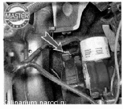
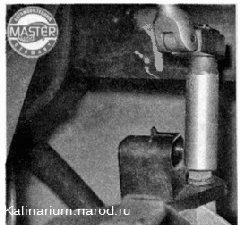
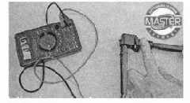

Датчик положения коленчатого вала снятие, проверка и установкаДля выполнения работы потребуется: мультиметр (в режиме вольтметра). Снятие 1. Подготавливаем автомобиль к выполнению работы. 2. Освободив фиксатор, отсоединяем колодку проводов от датчика положения коленчатого вала (на фото вид снизу автомобиля). 
3. Торцовым ключом на 10 мм отворачиваем болт крепления датчика положения коленчатого вала. 
4. Снимаем датчик. Проверка 1. Подсоединяем к выводам датчика мультиметр (в режиме вольтметра с пределом измерения до 200 мВ). 2. Быстро проносим лезвие отвертки вблизи торца датчика, при этом на вольтметре наблюдаем скачки напряжения. 
Болев точно датчик можно проверить, если снимать с него показания, когда он установлен на двигателе и вращается шкив коленчатого вала. У исправного датчика напряжение на выводах достигает 0,3 В. Неисправный датчик заменяем. Установка Устанавливаем датчик положения коленчатого вала в последовательности, обратной снятию. Набором щупов проверяем зазор между торцом датчика и зубьями шкива коленчатого вала. Зазор должен быть 1 + 0,41 мм, он задан конструкцией датчика и не регулируется. Если зазор больше нормы, следует удалить грязь из-под датчика. |